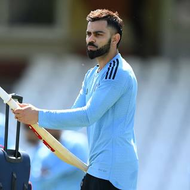

Aayushman Dash

Summary
I am inquisitive in nature and I always welcome new ideas which enhances my skills
Education
- Passed 10th from AFGJI with 96%
- Passed 12th from AFSCN with 95%
- Pursuing Btech in AiMl from SPIT Mumbai
Work Experience
Not yet but I have worked in some of the internships offered by the Indian Government.Attached below contains the same
- Atal Space Innovation(Mar 2021-Jan 22)
- Yuva Antariksh Samiti(Nov-Dec 2022)
Skills
- Public Speaking ⭐⭐⭐⭐
- Singing ⭐⭐⭐
- Leadership ⭐⭐⭐⭐
Awards
- Academic Excellence in 10th class
- Antariksh navachar puruskar by Atal Space Innovations
- Tansen Award for best singer
Other